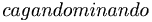

De: La Frikipedia, la enciclopedia extremadamente seria.
De: La Frikipedia, la enciclopedia extremadamente seria. De: La Frikipedia, la enciclopedia extremadamente seria.
«La gente se inventa estadísticas con tal de conseguir dinero, y eso sólo lo sabe el 14% de la gente.»
~ Homer Simpson sobre las estadísticas
«Tendrá todo el dinero del mundo, pero hay algo que nunca podrá comprar...¡¡un dinosaurio!!»
~ Homer Simpson sobre el valor del dinero
«-¿Cuánto dinero sacaste hoy?
-400 pesetas
-¿Qué tenías escrito en el cartel?
-Lo típico, tengo una mujer y dos hijos que tienen hambre
-¿Qué has sacado tú?
-400.000 pelas
-¿Qué coño tenías escrito en el cartel?
-Me faltan 1000 pesetas para volver a Marruecos»
~ Dos moros hablando de sus ganancias
«-¿Qué es lo que mide 18 cm y hace gritar a una mujer?
-Un billete de 500 leros
»
~ Dos canis cachondos
«Al final, los fichajes caros son los más rentables»
~ Florentino Pérez intentando justificar el fichaje de CR9
«El dinero siempre tiene la razón»
~ Bill Gates Sobre el dinero
«- Quiero este perfume para mi esposa
-Son 95 leros
- ¿95 leros este frasco tan pequeño?
-Tenga en cuenta que es del Cairo
- Pues a mi me lo dé del Baraito
»
~ Tío comprando un perfume
«El día que la mierda tenga algún valor, los pobres nacerán sin culo»
~ Rajoy en campaña electoral
«Soy un hombre tan afortunado que en la palma de la mano no tengo líneas, sino bingos»
Sustancia que segrega la sociedad, que al igual que las hormonas en el cuerpo humano, permite controlar ciertos aspectos del metabolismo del mundo, tales como corromper almas humanas innecesarias, desplazar (e hinchar/deshinchar) individuos, pulir corteza terrestre y financiar abominables y ridículamente insultantes anuncios de televisión (véase Steve Ballmer).
La palabra Dinero proviene del inglés Dinner (Cena) y del espiñol lero, ya que los espiñoles usaban su dinero para comprar la cena. Más tarde fue usado para comprar el desayuno y finalmente Bill Gates consiguió que se pudiese comprarlo todo con el dinero.
A diferencia de la verde o dorado, y a pesar de los que dicen los cientificos, el dinero si crece de los arboles.
Según su cantidad, el dinero puede dar la felicidad o llevar al suicidio. Para ver grandes cantidades véase:
Así se puede apreciar, que el dinero se va a todos lados menos a tu mano, y no es que tengas mala suerte, es que el dinero huye de ti, y por mucho dinero que ganes, en menos de un día verás que entre la seguro, el repirar... se te habra ido todo el dinero...
El dinero es una sustancia resbaladiza... al ser humano, una vez se tiene es muy fácil deshacerse de el por medios fisicamente inexplicables. Las principales propiedades de esta sustancia son su "huidición" de la criatura obrera y su acercamiento al ser poderoso. Se le encuentra en diferenciadas partes:
No olvides "el poder" que te da tener dinero, el poder ir al shopping (y comprar), el poder de hablar (y ser escuchado) etc, y tambien el menos importante -para los no corruptos (001% personas en el mundo)- el poder político para terminar () gobernando el mundo. Muy importante para adueñarte del mundo.
El dinero nació hace muchos años, pero no se le conocía como dinero, sino como intercambio de bienes. Cuando existia el intercambio de bienes, la humanidad era muy feliz y vivían de forma alegre y todos los paises estaban unidos. No habian guerras y todos los paises hablaban un lenguaje universal. Pero nació Bill Gates, que quería ser millonario y con el intercambio de bienes no conseguia ni un duro, así que creó el dinero para comprar la cena y finalmente se usó para comprar más cosas. Bill Gates se quedo con el 98% del total del dinero mundial. Así se creó el dinero y Bill Gates fué el hombre más rico del mundo mientras Africa se moría de hambre.
Bill Gates para jodernos a todos, creó distintos tipos de dinero, cada cual tiene una forma distinta de morir. Aunque está demostrado que todos tienen un factor común para ser vencido, darselo a una persona normal. Ahora explicaré cada moneda y su otras formas de ser vencida:
Invoca un modo Demonio y finalmente acabarás con el centimos de lero.
Es bastante raro encontranse con una año 2002, pero si te encuentras una te vas a cagar, ya que son el dinero más difícil de derrotar. Antes de la pelea te damos unos consejos:
Bueno una vez listo, vamos allá:
Cada vez que consigas coger desprevenida a la peheta, atácala con golpes directos con espada ... le quitará más que nunca otra arma, sencillamente acércate y mete espadazos hasta que te quedes sin fuerza.
Ten mucho cuidado: Cada vez que la peheta te golpeé te va a doler, y mucho... Sé rápido, y aprovecha muy bien las oportunidades en que puedes golpearlo. Cada vez que se transforme en modo Demonio (abusa mucho de esta estrategia) lánzale el pobre.
Usa las pociones y todos tus mejores objetos libremente: es una batalla muy dura, ahorrar es de tontos.
Si pierdes la pelea, morirás directamente, ya que la peheta llamará a su peña cani y estarás perdido. Con practica y tesón, la batalla acabará en poco tiempo.
Esta moneda utilizada por los yankis es la moneda que más felicidad da, por eso es la mas fácil de vencer. Lo único es que ataca en grupo, pero morirán de tres espadazos como máximo. Las peleas con estos son muy sencillas, destruye a todos los dólares que estén cerca tuya. Ten en cuenta que, poco a poco, cada vez más dólares irán apareciendo por medio de portales al infierno y como mínimo saldrán 400 dólares...
Los yenes son la divisa de Japón y actualemente están a punto de extinguirse, debido a que los frikis han eliminado actualmente al 95% de los yenes y solamente han dejado a ese 5% para que puedan reproducirse y depués matar a sus descendientes. En Japón tienen un día oficial para la caza yenes y es el segundo día más sagrado para ellos.
Las tarjetas de crédito son fisicamente más duras que el resto de billetes, pero más blandas que las monedas. Si dije antes que las pehetas son los enemigos más dificiles de vencer, mentía... Las tarjetas de crédito son muchisimo más fuertes que las pehetas. Solo CJ ha vencido a una tarjeta de crédito en toda la historia de la humanidad (Sí, sí, el del San Andreas). Voy a explicar detalladamente como CJ derrotó a la tarjeta de crédito:
en realidad es muy propenso a bajar de precio cada dia
Las otras monedas son como los enemigos normales que salen en los videojuegos. Pueden ser eliminados con gran facilidad y no suelen llegar en grandes cantidades aveses.
El blanqueo de dinero es la forma más fácil de conseguir dinero, aunque es dinero negro... pero es dinero. Si te pilla la contrabando de armas y es ilegal. Pero si es ilegal... ¿Por qué el banco de españa sigue fabricando dinero negro y es legal para comprar y vender cosas? Pues para llenar las cárceles y multar a la gente para que Espiña consiga más dinero. Por cierto, el dinero invierte la realidad, pues al blaquearlo se vuelve negro.
El dinero negro es el dinero de raza negra. Son faciles de reconocer, ya que tienen el cuerpo negro, aunque también se caracterizan por su pelo rizado o un mayor tamaño de las fosas nasales y los labios. Suelen ser en su mayoría raperos o jugadores de fútbol. No suelen ser peligrosos, ya que se ganan la vida de esa forma. Aunque si son peligrosos, suelen tener el doble de defensa que el dinero normal y un 15% de mayor velocidad al hablar y al correr.
Autor(es):